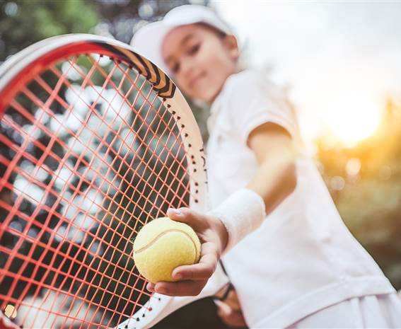
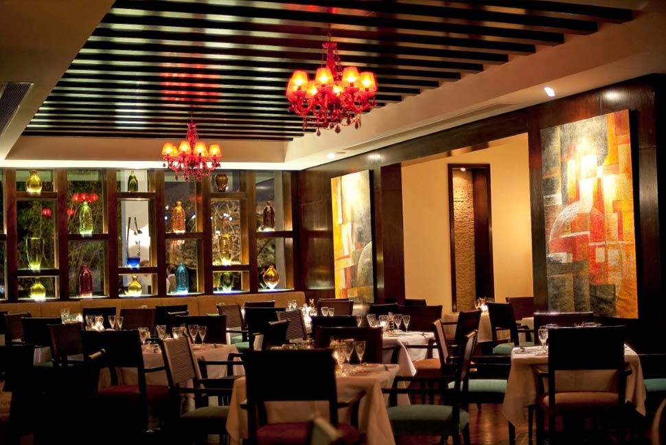

Baroon HOTEL

n air condetion and a ventilation device works to ensure a comfortable indoor climate in the rooms on the balcony or heritag where guests can relax in a wonderful way additional beds and cots can be provied there is also a safe manipulator and office table in sarvece there is a small refrigerator and a coffe and tea maker there is also an ironing set for extra comfort for guests
Hotel swimming pool

Sharm el Sheikh is one of the top destinations in Sinai and the Red Sea . Many Tourists around the world come and enjoy the beautiful weather, sandy beaches and one of the world’s top diving places. It is also known as the city of peace that not only does it attract tourists but also attracts exhibitions, conventions and tournaments. Naema Bay and Soho Square are the top attractions for all Sharm el Sheikh Visitors who wants to go around for some fun. On the other hand, if you are seeking water and diving activities, then Ras Mohamed National Park shall be on the top of the list, as well as Thistlegorm Dive Site, Jolanda Reef Dive site, Ras Um El Sid Beach and Reef. Don’t forget to arrange day trips to explore the mountains and deserts in Mount Sinai, Safa & Desert adventures along with Colored Canyon.
room

My room is a place where I feel the most comfortable and openly show my personality to myself. This is the place where I do want I want to do and it is the place where I disembark myself when I come home and wake up every day.
Activity Place
My everyday activities begin from the time I wake up till the time I go to bed. They span from anything to everything. My everyday activities ensure that I don't become lazy and stay active. With the help of my systematic everyday activities, I save myself a lot of time and also keep healthy.
Resturant
A restaurant is a place where people visit to eat and drink the food being prepared on the premises and pays for the same. The food is served at the table to have a comfortable visit for your meals. The restaurant offers a menu with various options for your meal, to choose from.
5 star hotel
tel:0693670100
Adr:Montazah south sina in sharm-el-sheikh